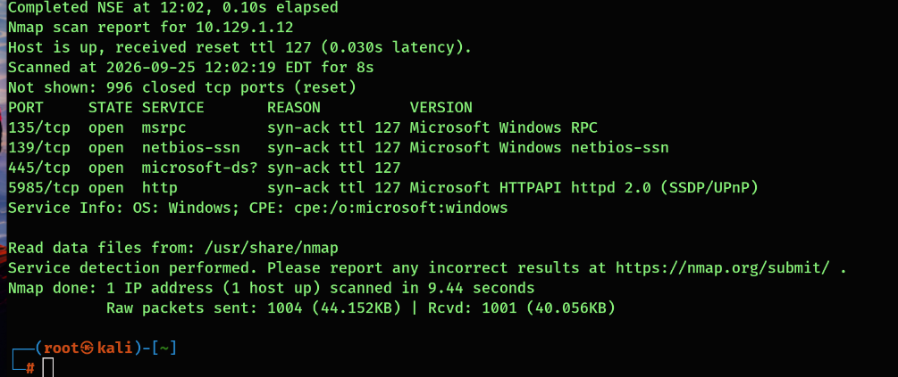
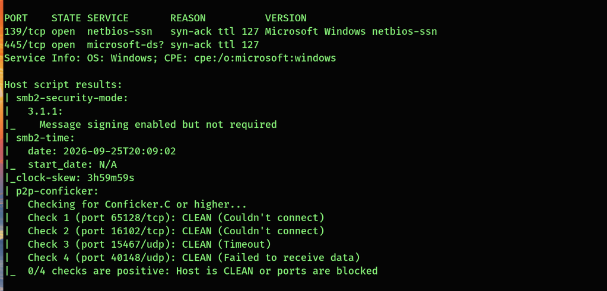
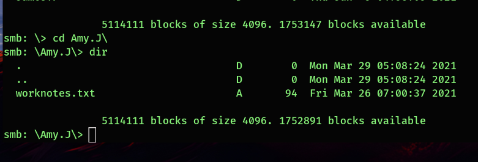
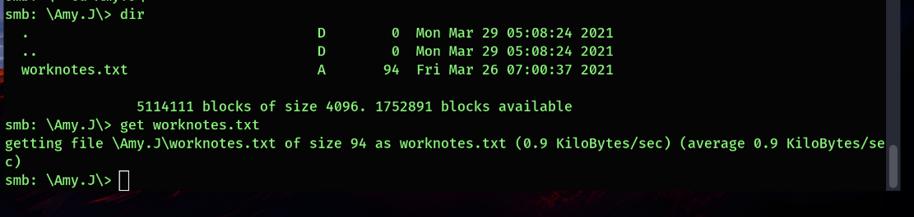
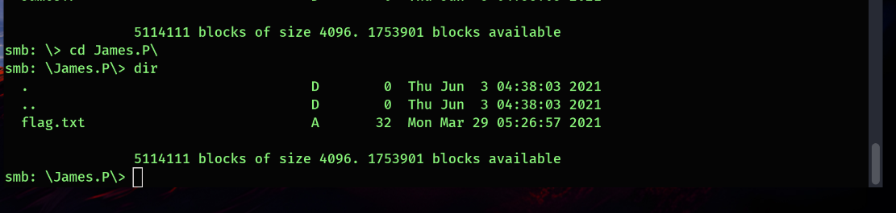

Dancing — Windows SMB Share Assessment
I traced a Windows host from service discovery to an SMB share that allowed directory browsing and file download without a supplied password. Every conclusion below is tied to the observed terminal output.
Scope and timing
This is an authorized training machine named Dancing. The documented window runs from the first connectivity screenshot at 12:01:28 to the directory listing of flag.txt at 12:17:26 EDT on September 25, 2026. It measures discovery through finding the filename; the screenshots do not show flag retrieval or submission.
The target is a lab IP. No flag value, credentials, or contents of the downloaded notes are published here.
Investigation
1. Reachability and service discovery
ping -c 4 10.129.1.12
nmap -sV 10.129.1.12 -vvAll four ping requests received a reply. Nmap identified ports 135, 139, 445, and 5985 as open. SMB on 445 gave me a concrete next step: test whether any file shares were visible or accessible.
| Port | Service | Meaning |
|---|---|---|
| 135 | Windows RPC | Endpoint mapping |
| 139 | NetBIOS session | Windows sharing transport |
| 445 | Microsoft-DS / SMB | Direct file sharing |
| 5985 | Microsoft HTTPAPI | Common WinRM HTTP transport; not necessarily a website |

2. SMB checks and their limits
nmap -sV -p445 10.129.1.12 --script=vuln -vv
nmap --script smb-vuln* -p 445,139 10.129.1.12 -vvSMB signing was reported as enabled but not required. Some vulnerability script probes failed to connect or negotiate; I did not interpret an incomplete check as proof that a vulnerability was absent. Signing was not used as an access path in this lab.

3. Share listing versus real access
smbclient -L //10.129.1.12//
smbclient //10.129.1.12/WorkShares
# Empty response at the password prompt; then use dirThe share list included ADMIN$, C$, IPC$, and WorkShares. I then entered WorkShares with no password supplied and listed Amy.J and James.P. Seeing an administrative share name does not prove access to its contents. A later SMB1 workgroup lookup error did not undo the earlier successful share listing.

4. File access and the flag location
cd Amy.J
dir
get worknotes.txt
cd ..
cd James.P
dirworknotes.txt was listed and downloaded (94 bytes). A later listing in James.P showed flag.txt (32 bytes). The intermediate cd .. is the navigation step between folders; it is not independently shown in the screenshots. The flag's filename is the last confirmed result.


Finding and defensive response
Observed exposure: WorkShares permitted browsing and at least one file download after a connection with an empty password response. The server-side identity mapped to that session is unknown. This is an effective permissions issue; no remote code execution or access to the administrative shares was demonstrated.
- Require named accounts and remove unintended guest access to internal shares.
- Review both SMB share permissions and NTFS permissions for each folder.
- Restrict SMB reachability to trusted network segments and authorized clients.
- Audit file access and retest using low-privilege and no-password sessions.
- Assess requiring SMB signing separately from the share permission finding.
What I learned
Enumeration becomes convincing when each step makes a stronger claim: host reachable → SMB port open → share named → directory browsable → file downloadable. A password prompt followed by an empty response establishes no password was supplied, while the server's actual guest or anonymous mapping needs separate confirmation. A file listed in a directory is not the same evidence as a file read.
Read the full command and evidence log on GitHub